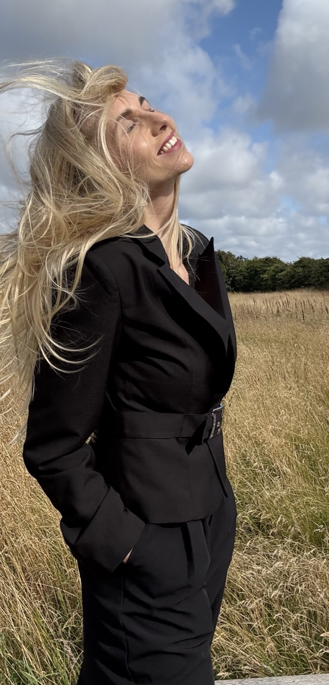
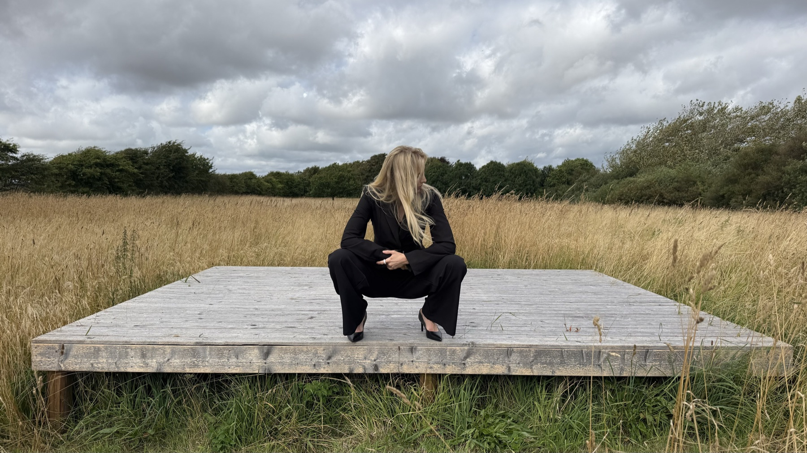
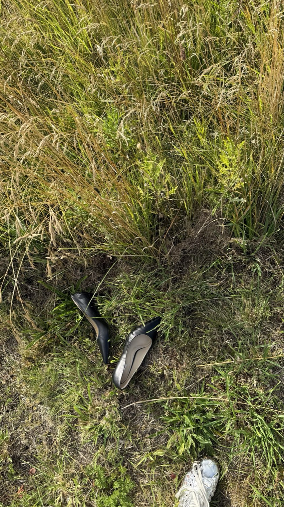
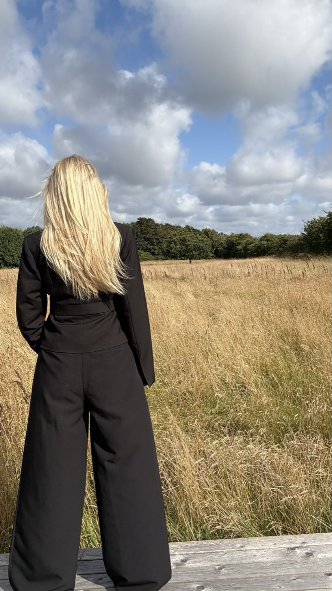

Strategier skaber ikke resultater. Mennesker gør.
Jeg hjælper dig ikke bare med at lave en strategi. Jeg hjælper dig med at have energien til at følge den.

Du kan ikke følge strategien
uden energien.
Energida hjælper mennesker og virksomheder med at skabe varige resultater gennem bevidsthed, energi og strategi.
Jeg tror på, at energi er vores vigtigste ressource. For selv den bedste strategi er dårlig uden energien til at følge den.
Én metode. Tre dele.
Uanset om du er menneske eller forretning, er min metode den samme. Jeg tager udgangspunkt i dig og din virkelighed.
Rækkefølgen er ikke tilfældig. Bevidsthed kommer før forandring. En strategi virker kun, hvis den passer til det menneske eller den virksomhed, der skal følge den.
Lær den version af dig selv, du er i dag, at kende og forstå, hvad der spænder ben.
Vi skaber sammen en realistisk strategi, der passer til dit udgangspunkt, og der passer til din hverdag.
Du får energien til at følge strategien og strukturen til at implementere den i din hverdag.

Du arbejder mere end nogensinde, uden at det kan mærkes på bundlinjen.
- Verden har forandret sig. Er din forretning fulgt med?
- Få overblik over, hvor din energi og bundlinje forsvinder hen
- Få redskaberne til at tage kontrollen og energien tilbage

Hvem er du, og hvad skal du?
- Forstå, hvor energien bliver af
- Forstå, hvorfor du gør, som du gør
- Få energien tilbage

Jeg kender følelsen af at løbe stærkt uden at kunne mærke mig selv.
I mange år jagtede jeg succes og anerkendelse, men prisen var høj: min krop sagde fra med smerter, stress og angst.
Vendepunktet kom, da jeg begyndte at lytte til signalerne. Gennem min uddannelse som health coach og specialer i adfærd, moderne smertevidenskab, biomekanik og vejrtrækning fandt jeg redskaberne til at skabe ro, energi og styrke indefra.
I dag bruger jeg både min faglige viden og mit kreative drive til at hjælpe andre med at finde ind til deres kerne og bygge strategier, der giver energi, mening og resultater.
Alt jeg laver tager udgangspunkt i dig og din virkelighed.
“Ida hjalp mig med at forstå min ADHD og lærte mig konkrete strategier til at mestre hverdagen.”
“Jeg har fået mere energi, er blevet stærkere og føler mig bedre rustet til at holde fast i løb og bevægelse.”
“Ida mødte mig dér, hvor jeg var, og hjalp mig videre med ro, struktur og respekt.”
“Ida er utrolig dygtig til at skabe et trygt rum, hvor man føler sig set og hørt.”
“Ida var helt utroligt god til at finde frem til præcis dér, hvor skoen trykkede i mit liv. Tag ikke fejl, Ida er en menneskekender.”
“Jeg står tilbage med mere energi, bedre søvn, færre cravings og en større bevidsthed om, hvordan jeg passer på mig selv i hverdagen.”
“Ida har gjort en stor forskel for mig og givet mig værdifulde redskaber, som jeg fortsat arbejder videre med. Det er en investering i livet.”
Har du noget på hjertet?
Hold dig ikke tilbage. Del din idé med mig, eller det, du står med, så finder vi sammen ud af, om jeg kan hjælpe.